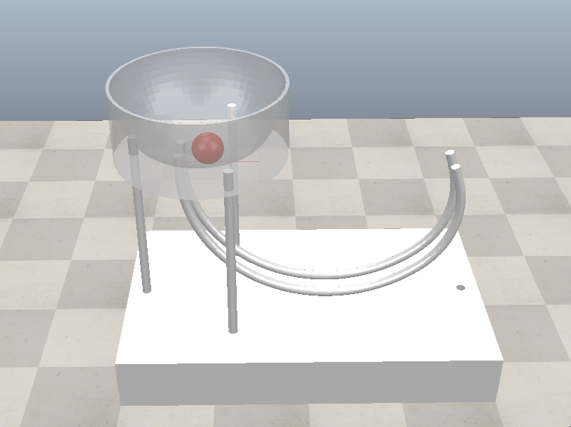

w12 <<
Previous Next >> 網路設定
w13-w14
利用 ChatGPT 對話所完成的 2a 座位排序程式: w13_2a_seat.py 執行結果
利用 "sudo update-rc.d stunnel4 defaults" 將 s.cycu.org 中的 stunnel4 設為與系統同步啟動.
w13_2b_1.mp4 (說明如何利用 ChatGPT 協助利用 Python 程式列出各組學員座位表)
接下來請根據下列步驟測試如何在 CoppeliaSim 場景中利用感測器偵測, 並對特定物件施力:
第一步:
下載支援 IPv6 網路協定版本 CoppeliaSimEdu_4.5.1_rev4_for_cd2023.7z (需要下載密碼)
CoppeliaSim 使用者手冊, CoppeliaSim 4.3.0 使用手冊網站
第二步:
與 ChatGPT 對話時, 可以利用 zmqRemoteAPI Python for cad2023.7z (需要下載密碼) 中的 ZMQ Remote API Python 程式作為 Template, 探討如何設置感測器, 在正確時間對剛球施力.
第三步:
實際操作 CoppeliaSim 鋼球永動模擬器電腦輔助設計三個階段: 建立模型零組件 - 轉入機電模擬系統 - 根據實際物理條件設置機電系統. perpetual_motion_simulator_project_cad2023.7z 下載 (需要密碼)
請各組學員將上列三個步驟的執行, 以 Wink 操作影片放入個人與分組網站中的 w13 頁面.
w13_2b_2.mp4 (有關上列操作步驟的說明)
triangle_solvespace_coppeliasim_ex1.7z (利用 Solvespace 建立 V 形軌道, 希望建立較簡單的鋼球永動模擬系統)
w14
專案一 Perpetual Motion Simulator 永動模擬器:
cad2023_w14.7z (需要透過控制系統設計找出能讓鋼球通過感測器時的最佳施力大小)

參考資料:
https://wikis.utexas.edu/display/RMD/Home+-+Robot+Mechanisms+Design
以 API 改變重力:
sim.setArrayParameter(sim.arrayparam_gravity,{gx,gy,gz}).
set initial velocity:
sim.setObjectFloatParameter(objectHandle,X,y), where X can be sim.shapefloatparam_init_velocity_x, sim.shapefloatparam_init_velocity_y or sim.shapefloatparam_init_velocity_z, and y the initial velocity in that direction
get object velocity:
list linearVelocity, list angularVelocity = sim.getObjectVelocity(int objectHandle)
Reinforcement Learning:
https://www.coppeliarobotics.com/helpFiles/en/PyRep.htm
https://github.com/chauby/CoppeliaSimRL
w12 <<
Previous Next >> 網路設定